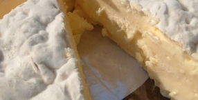
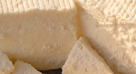

Our Camembert has been awarded a Gold medal at the British Cheese Awards in October 2008.
|
On our dairy farm overlooking the river Severn in Gloucestershire, we make two very special cheeses using the milk from our own Friesian cows. |
|  |
One is a Camembert, a smooth mould ripened cheese with an edible rind. Like its French cousin, the centre of this cheese softens and the taste develops as it matures. It is best eaten when it reaches maturity, at between four and eight weeks. |
|
The other is a Fresh Cheese which is white, mild and quite firm. It is similar in consistency to feta cheese and is best eaten within two weeks of fabrication. This cheese can be used in salads or in cooking and is also delicious simply on a biscuit or with some fresh bread. It is very popular with children. |

|
|
|
Our Camembert has been awarded a Gold medal at the British Cheese Awards in October 2008. |
|
|
We sell our cheeses at local farmer's markets and through some selected
independent retailers. All the milk used in the making of our cheeses comes
from our own cows that graze in our organic pastures. The milk is pasteurised
and we use only vegetable rennet.
Our reputation is growing and we have many loyal customers. Why not join them? For more information, please call us on 01594 516 304 David and Penny Hill RUDDLE COURT CHEESE |